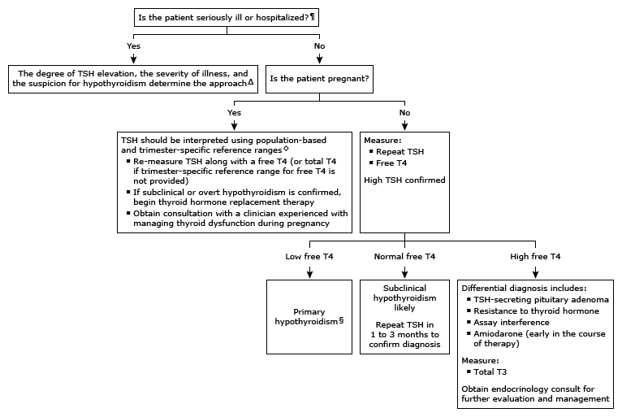

Initial evaluation of high TSH* in adults (not taking levothyroxine)

This algorithm is intended to be used in conjunction with additional UpToDate content on hypothyroidism.
TSH: thyroid-stimulating hormone; T4: thyroxine; T3: triiodothyronine. * The normal range for TSH in nonpregnant adults is typically 0.5 to 4 mU/L. Interpretation of a specific abnormal test result should be based upon the reference range reported with that result. ¶ In general, TSH should not be assessed in seriously ill patients unless there is a strong suspicion of thyroid dysfunction, since there are many other factors in acutely or chronically ill euthyroid patients that influence TSH secretion. Δ Refer to UpToDate content on thyroid tests in nonthyroidal illness. ◊ If the laboratory does not provide population and trimester-specific reference ranges for TSH, an upper reference limit of approximately 4.0 mU/L can be used. Refer to UpToDate content on thyroid disease in pregnancy, including algorithm on management of pregnant women with or at risk for hypothyroidism. § A patient with a low free T4 and a slightly high serum TSH concentration (eg, 5 to 10 mU/L [normal range 0.5 to 5 mU/L]) could have either primary or central hypothyroidism, although central hypothyroidism is rare. Central hypothyroidism should be suspected in patients with known hypothalamic or pituitary disease and when there are symptoms and signs of other hormonal deficiencies.